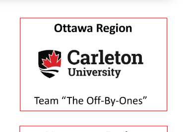

Cybersecurity & AI/ML · Ottawa
I build the thing,
then I try to break it.
Hello, I'm Kishaan. I'm a computer science co-op student at Carleton University in the AI/ML stream, and right now I'm on a cloud security product team at TrendAI, building agent tooling that triages security alerts. I love both halves of this work: shipping the system, then hunting for the way in.
Currently · Product Team, AVTD at TrendAI
01 · Selected work
Work
Three things I've built or won: an optimal-control solver I couldn't stop working on, an AI triage system with real stakes, and a capture-the-flag weekend that ended first place.

02 · Experience
Experience
-
 Current
Current
TrendAI
Product Team, AVTD
- Built a read-only SOC alert-triage agent on the Claude Agent SDK that chains multi-step tool calls across six custom MCP tools to triage alerts and correlate cloud-asset CVEs
- Fixed a two-region production incident where Azure zonal-capacity failures left zombie VMs marked healthy and stranded 30+ scans, then killed the failure class for good with idempotent teardown and launch guards
- Shipped AWS region eu-south-2 end to end for agentless vulnerability scanning and VPC Flow Logs (CloudFormation, pipelines, tests), then codified the 15-task runbook into a reusable Claude Code skill
- Expanded weekly BlackDuck and Fortify SCA/SAST scans from 22 repos to all 52 with GitHub Actions, then remediated 270+ critical and high findings across 23 repos, driving the critical backlog to near zero
- Cut a live nine-service disaster-recovery simulation from 10 hours to 5, orchestrating AI subagents through three end-to-end dry runs to clear every CI failure
-
 May – Aug 2025
May – Aug 2025
Hydro Ottawa
Cybersecurity Analyst Intern
- Built a third-party app-risk pipeline that scrapes Google Workspace Marketplace listings and scores each app's terms of service and security policies with Gemini's REST API
- Wrote four incident-response playbooks, 20 to 30 pages each, covering AI data leaks, web exploits, ransomware and insider threats, then validated every one of them end to end in test environments
- Deployed AWS GuardDuty with Terraform to secure S3, built a Lambda pipeline that auto-quarantines malicious files with SNS alerts, and migrated 20+ PGP secrets into Secrets Manager
- Emulated Living-off-the-Land attacks by chaining 10 to 25 MITRE ATT&CK abilities in Caldera, which is where I learned how quiet a real intrusion looks
- Tested DNS connections with a PowerShell script driving Cloudflare API calls
-
 Feb – Aug 2023
Feb – Aug 2023
Ciena
Software Developer Intern
- Automated daily test-result reports with a cron-scheduled Python tool, writing SQL against Oracle and emailing formatted tables to every deploying team. It is still running today, which I am still quietly proud of
- Built the Angular and TypeScript front end of an internal IAM permission-assignment tool
- Learned DevOps and Agile in practice, with Jira and Git
03 · About
About
- Education
- Carleton University · Computer Science Co-op, AI/ML stream
- Focus
- Agentic AI · optimal control · offensive security · capture-the-flag
- Languages
- English · French, DELF B2
- Off keyboard
- Soccer, playing and watching Liverpool · the gym, most days · reading on where AI is actually heading
Toolkit
Marked · what I use most
Languages
AI & optimisation
Cloud & security
Web & tooling
04 · Contact
Have something to build,
or something to break?
I'm looking for my next co-op or internship in AI/ML and security engineering. If you're building agents, hardening cloud, or both, I would genuinely love to hear about it. My inbox is open and I answer everything.
kishaangidda@gmail.com